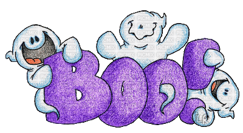
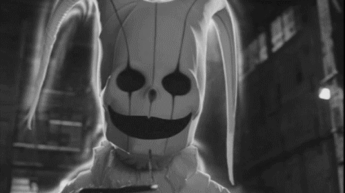
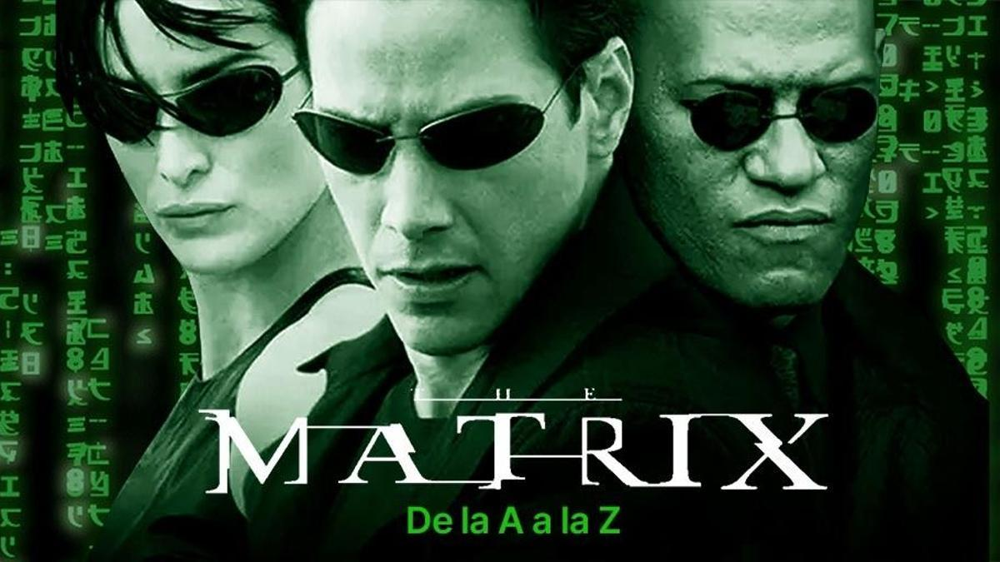
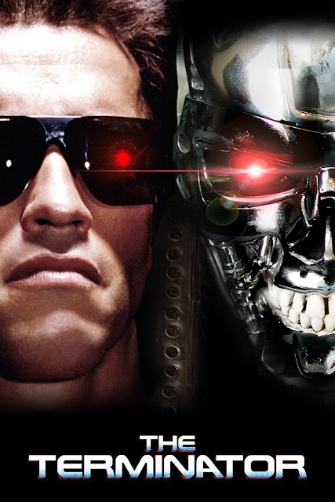
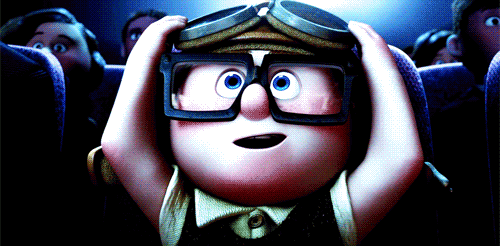

El cine de terror es un género cinematográfico diseñado para provocar miedo, tensión, pavor y asco. Su origen se remonta a 1896 con el cortometraje La mansión del diablo, y desde entonces ha evolucionado a través de diversos subgéneros que reflejan los miedos y ansiedades de cada época.
Las películas de terror se dividen en diferentes categorías según cómo generan el miedo:

It: Basada en la icónica novela de Stephen King, la saga It sigue a un grupo de niños marginados conocidos como el "Club de los Perdedores". En el pueblo de Derry, Maine, se enfrentan a una entidad demoníaca que cambia de forma y toma la apariencia del terrorífico payaso Pennywise. El monstruo despierta cada 27 años para alimentarse del miedo de los niños
Evil Dead: El despertar (conocida en España como Posesión infernal: El despertar y en inglés como Evil Dead Rise) narra la aterradora historia de dos hermanas distanciadas cuyo reencuentro se ve interrumpido abruptamente por un terremoto. Este sismo libera a una antigua entidad demoníaca que desata una sangrienta batalla por la supervivencia en un ruinoso edificio de apartamentos en Los Ángeles
Pesadilla en Elm Street: La franquicia de Pesadilla en Elm Street (creada por Wes Craven) sigue a un grupo de adolescentes atormentados en sus sueños por Freddy Krueger, un espíritu vengativo con el rostro desfigurado y un guante de cuchillas. Si mueren en pesadillas, mueren en la vida real.
El conjuro 3: El diablo me obligó a hacerlo revela el escalofriante caso real de 1981 de Arne Cheyenne Johnson. Acusado de asesinato, utiliza la "posesión demoníaca" como defensa legal por primera vez en la historia de Estados Unidos. Los investigadores paranormales Ed y Lorraine Warren deben descubrir la verdad detrás del crimen.
El cine de ciencia ficción utiliza la tecnología, teorías científicas (reales o imaginarias) y escenarios especulativos para explorar futuros distópicos, viajes en el tiempo, vida extraterrestre y realidades alternativas. Es un género que reflexiona sobre la condición humana y la sociedad.
El cine de ciencia ficción es un género cinematográfico, trasunto del género literario, que utiliza la ciencia para fundamentar narraciones con representaciones especulativas de fenómenos imaginarios como extraterrestres, planetas alienígenas y viajes en el tiempo o en el espacio exterior, a menudo con elementos tecnológicos como naves espaciales futuristas, robots y otros artefactos más o menos inspirados en las posibilidades de la ciencia. Esta representa en el género lo que la fantasía en el mito.
Categorias de la ciencia ficción



Matrix: es una aclamada película de ciencia ficción distópica que sigue a Neo, un hacker informático que descubre que toda la humanidad vive atrapada sin saberlo en una simulación virtual. Esta ilusión fue creada por máquinas inteligentes para extraer la energía de los cuerpos humanos.
The Truman show: es una aclamada película de ciencia ficción y comedia dramática estrenada en 1998. Sigue la vida de Truman Burbank, un hombre común y optimista que descubre, tras una serie de extraños sucesos, que su idílica vida es en realidad un gigantesco programa de telerrealidad.
Back to the future: La historia sigue a Marty McFly, un adolescente de 1985 que viaja accidentalmente a 1955 en una máquina del tiempo DeLorean creada por su amigo científico, el excéntrico Doc Brown . Tras impedir que sus futuros padres se conozcan, Marty debe lograr que se enamoran para salvar su propia existencia y encontrar la manera de regresar a su época.
The Terminator: La película The Terminator (1984) narra la historia de un cíborg asesino enviado desde el año 2029 hasta el Los Ángeles de 1984. Su misión es eliminar a Sarah Connor, una joven cuyo hijo por nacer liderará a la resistencia humana contra una red de inteligencia artificial que busca extinguir a la humanidad
El cine infantil abarca largometrajes y cortometrajes adaptados al nivel de comprensión y a los intereses de los más jóvenes. Este tipo de producciones destacan por sus mensajes educativos, su humor sano y sus mundos visuales, ideales para disfrutar en familia
categoias:

intensamente: La historia se desarrolla en la mente de Riley, una niña de 11 años cuyas emociones básicas (Alegría, Tristeza, Temor, Desagrado y Furia) manejan sus decisiones. Todo cambia cuando su familia se muda a San Francisco, provocando una crisis que altera su vida y pone a prueba el verdadero propósito de la tristeza.
los increibles: narra la historia de la familia Parr, un clan de superhéroes retirados obligados a ocultar sus habilidades. Cuando el patriarca, Bob (Mr. Increíble), acepta una misión secreta que sale mal, su esposa e hijos deben entrar en acción para salvarlo a él y al mundo de un malvado villano
los Minions: Los minions, ingenuos y torpes ayudantes de villano, llevan buscando, desde el principio de los tiempos, un verdadero malhechor al que servir. A lo largo de una evolución de millones de años, los minions se han puesto al servicio de los amos más despreciables. Kevin, acompañado por el rebelde Stuart y el adorable Bob, emprende un emocionante viaje para conseguir una jefa a quien servir, la terrible Scarlet Overkill.
Frozen: Frozen (Una aventura congelada) cuenta la historia de Anna, una princesa optimista, quien emprende un viaje épico junto al montañés Kristoff, su reno Sven y el muñeco de nieve Olaf. Su misión es encontrar a su hermana Elsa, cuyos poderes gélidos han sumido por accidente al reino de Arendelle en un invierno eterno.